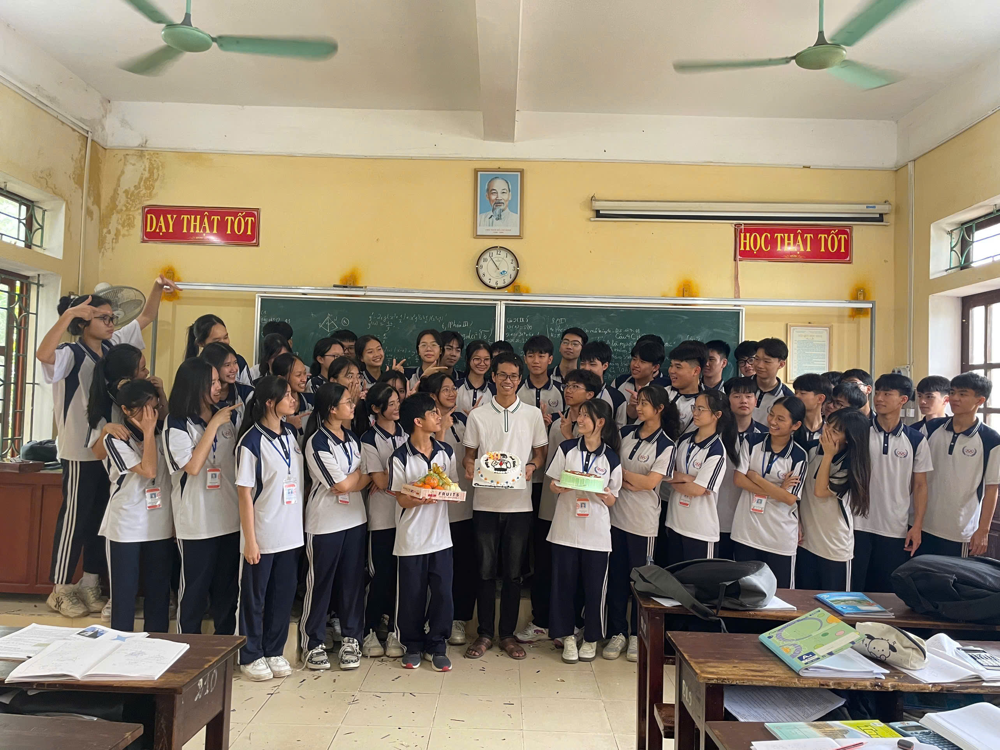
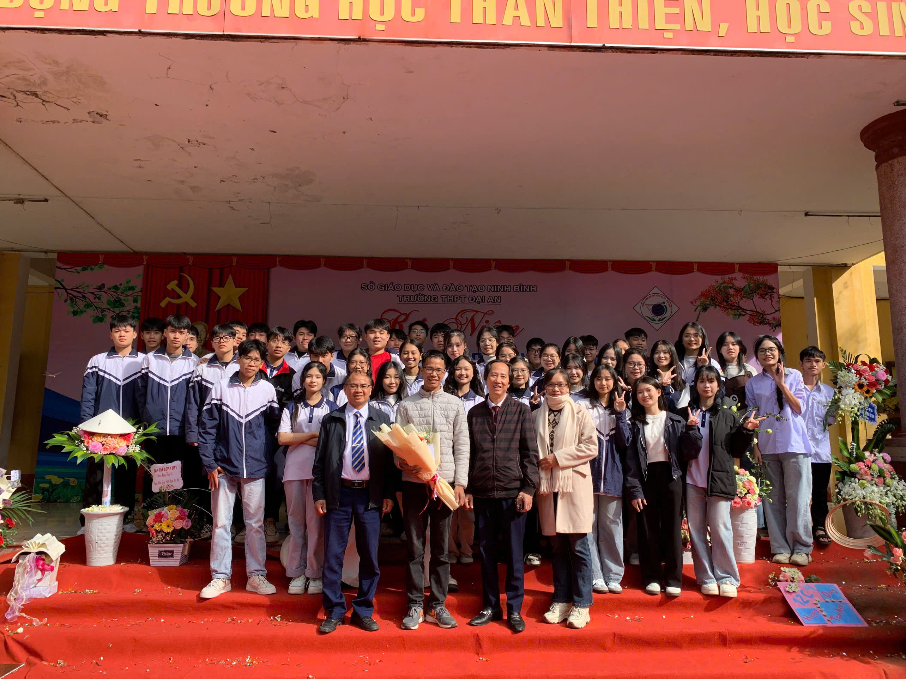
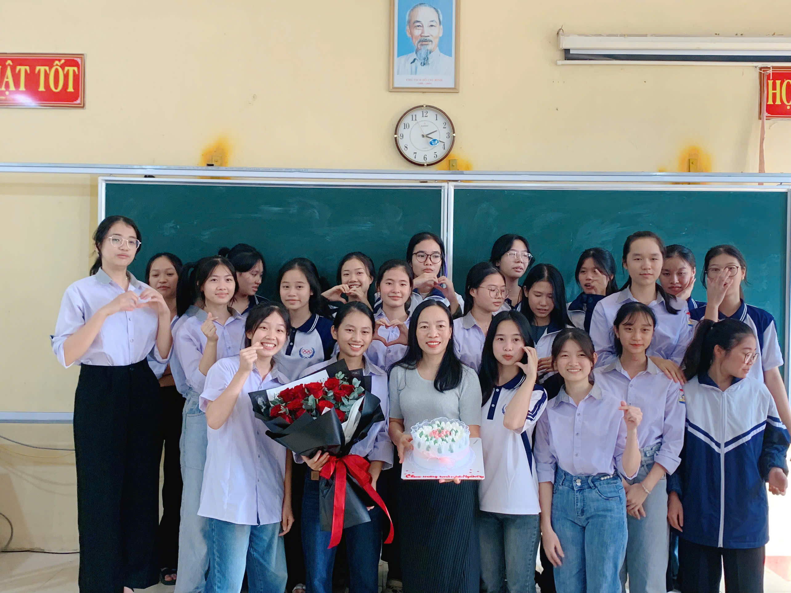
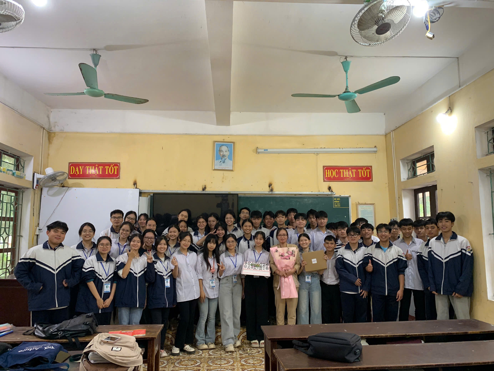
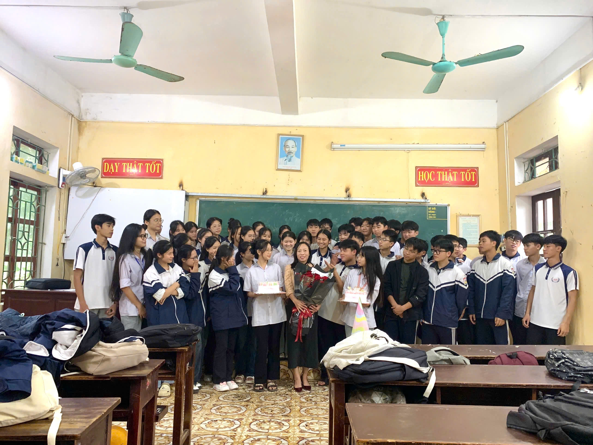
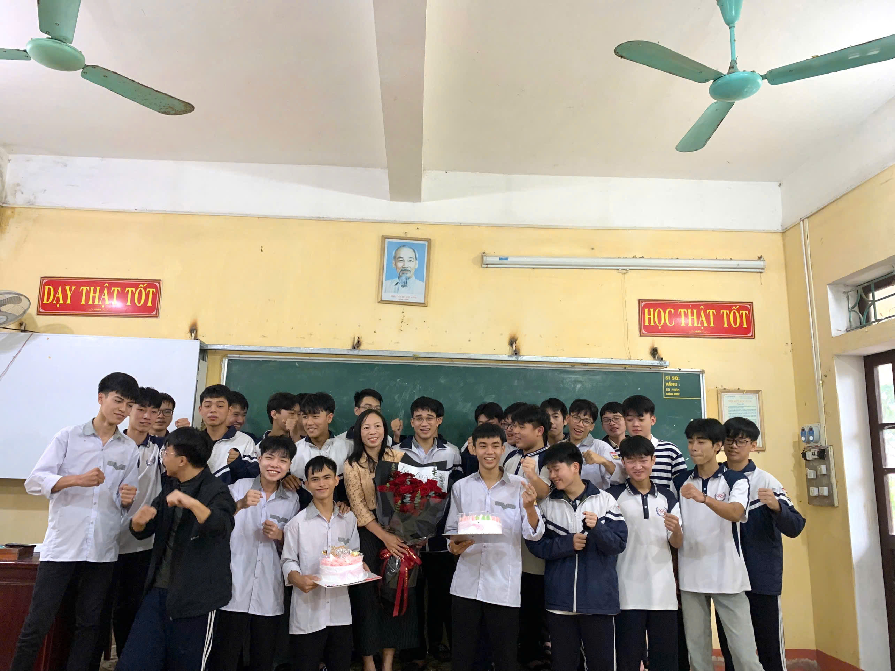

20 • 11 • 2026
"Công ơn thầy cô như biển trời bao la,
dù thời gian có trôi, tình nghĩa vẫn mãi in sâu"
Bắt đầu hành trình kỉ niệm
CUỘN XUỐNG ĐỂ KHÁM PHÁ
︾
Lời Thì Thầm
Góc Kỉ Niệm






Bảng Lời Nhắn
Chúc thầy cô sức khỏe dồi dào, luôn tràn đầy niềm vui và hạnh phúc trong sự nghiệp trồng người.
Thầy đã giúp em tìm thấy đam mê trong học tập. Cảm ơn thầy rất nhiều!
Em rất biết ơn thầy cô vì thời gian qua đã luôn hết lòng yêu thương và dạy dỗ em khôn lớn.
Dù thời gian có trôi qua, chúng em sẽ mãi nhớ đến thầy cô với tất cả sự kính trọng và biết ơn.
Có những lúc chúng em vô tư, chưa hiểu hết sự tận tâm của thầy cô. Đến cuối cấp rồi mới thấy mọi điều đều đáng trân trọng.
Chúc thầy cô ngày 20/11 tràn đầy niềm vui và hạnh phúc. Thầy cô luôn là sự khích lệ không ngừng cho chúng em.
Cảm ơn thầy cô đã đồng hành cùng chúng em trong quãng thời gian quan trọng nhất.
Ba năm không phải là quãng thời gian quá dài, nhưng đủ để chúng em trưởng thành hơn. Cảm ơn thầy cô vì tất cả.
Nhân ngày 20–11, em xin gửi tới thầy cô lòng biết ơn chân thành và sâu sắc nhất.
Chúc thầy cô luôn mạnh khỏe để tiếp tục thắp sáng ước mơ cho bao thế hệ học trò.
Dù mai này đi đâu, chúng em vẫn tự hào vì từng là học trò của thầy cô.
Trước khi rời đi, chúng em chỉ muốn nói rằng: cảm ơn thầy cô vì đã là một phần thanh xuân của chúng em.
Kính chúc thầy cô luôn bình an, nhiệt huyết và thành công trong sự nghiệp trồng người.
Chúc thầy cô thật nhiều niềm vui khi nhìn thấy học trò trưởng thành.
Kính chúc thầy cô luôn hạnh phúc và mãi giữ trọn ngọn lửa yêu nghề.